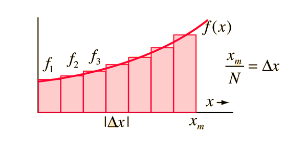
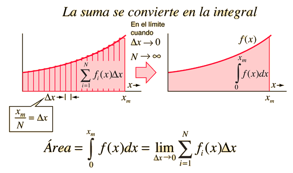
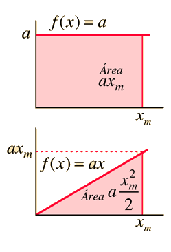
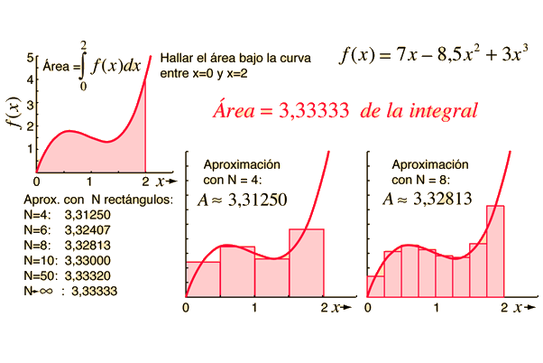
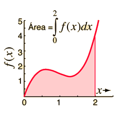

Introducción
La formulación del área bajo una curva es el primer paso para desarrollar el concepto de integral.
La integral como límite del área
La aproximación al valor del área bajo una curva puede mejorarse tomando rectángulos de aproximación más estrechos.
Ejemplos de integral de área
Los ejemplos de área de geometrías simples pueden reforzar la idea de la integral como el área bajo una curva.
Aproximaciones a la integral de área
El área bajo cualquier curva continua se puede obtener aproximadamente dibujando un número de rectángulos.
Ejemplos de integral de área polinómica
Las integrales son útiles para el cálculo del área bajo curvas que se pueden obtener de forma aproximada por medio de métodos geométricos.
